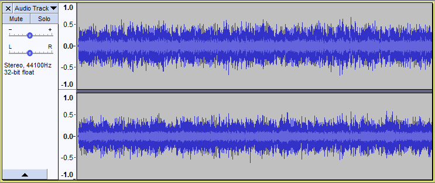
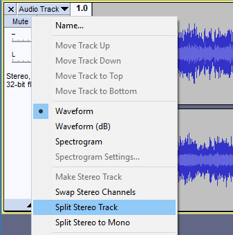
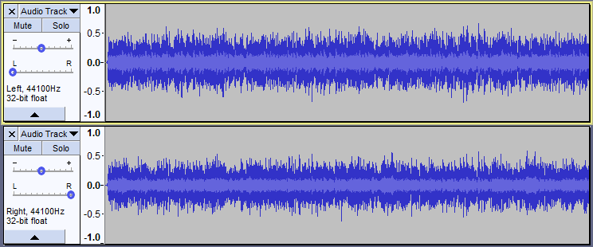
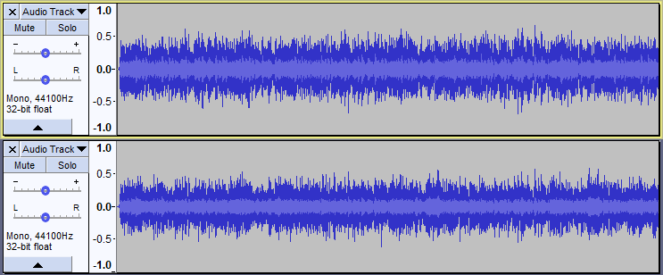
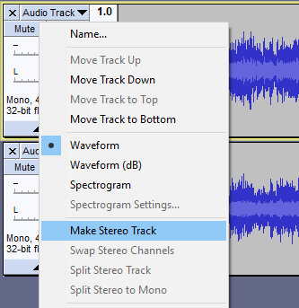

Splitting and Joining Stereo Tracks
- Split a stereo track into separate tracks for left and right channels
- Split a stereo track into two separate mono tracks
- Join two mono, left or right tracks into one stereo track.
Splitting a Stereo Track
Here is a stereo track:
- 
You can make separate left-channel and right-channel tracks so that you can edit them separately. Open the Audio Track Dropdown Menu and choose Split Stereo Track:
- 
Now you can see the two tracks marked "Left" and "Right":
- 
Splitting a Stereo Track into two Mono Tracks
You can instead choose to split a stereo track into two mono tracks.
After choosing "Split Stereo to Mono" from the Track Dropdown Menu on the original stereo track we get two separate mono tracks:
- 
Joining tracks to make a stereo track
Choosing "Make Stereo Track" from the Track Dropdown Menu of the upper track of a pair of mono, left or right channel tracks (in any combination) will combine those two tracks into one stereo track. The upper track will become the left channel of the stereo track and the lower track will become the right channel regardless of their current designation as mono, left or right. In the example below, two mono tracks are about to be combined into one stereo track. The result of this operation will be to re-create the stereo track as shown in the first image on this page.
- 
When joining two single-channel tracks into one stereo track be aware that:
Thus the join action may make the balance sound different from your intentions or what you hear when playing the tracks.
If you want to preview the result of the Make Stereo Track command, set the gain of each track to 0 dB, set the pan of the upper track to 100% left and set the pan of the lower track to 100% right. If you wish to retain the gain, pan and envelope settings of the two mono tracks when joining them into one stereo track, select the two tracks then choose instead of joining the tracks. |
Examples using the Track Dropdown Menu
Example 1: Applying equalization to one channel of a stereo track
Assume that you have a recording where one channel is "muffled" - lacking in high frequencies compared to the other channel.
- Choose Split Stereo Track from the Track Dropdown Menu.
- Select the muffled track, for example by clicking in the info area of the Track Control Panel.
- Choose and apply the appropriate equalization curve to the track.
- Listen to the result - if it is not as intended, choose and try a different equalization curve.
- When you are satisfied with the result, choose Make Stereo Track from the Track Dropdown Menu of the upper track.
Example 2: Reducing the "width" of a stereo track
Assume you have a recording of a drum kit where the stereo spread of the kit sounds unnatural. The high hat sounds like it's coming from the right speaker only and the floor tom from the left speaker.
- Choose Split Stereo to Mono from the Track Dropdown Menu, which makes two new mono tracks and sets them to mix together equally in both left and right channels of your listening equipment.
- Adjust the pan control of the upper track to 70% left.
- Adjust the pan control of the lower track to 70% right.
- Listen to the result and adjust the pan controls until you get the effect you want.
- Select the two tracks, for example by clicking info area of the Track Control Panel of one track, then holding Shift and clicking similarly in the Track Control Panel of the other track.
- Choose so that the two tracks are mixed and rendered into one stereo track. This changes the audio data and waveform to match with the audible pan settings.
- If instead at step 6 you had chosen Make Stereo Track on the upper track, this does not render your changes: you would just get your original stereo track back again since Make Stereo Track ignores the pan settings. Use then if you choose Make Stereo Track by mistake.